← 返回阅读库 · 原论文目录
论文讲解阅读文档 · 多模态语言模型 · v031
Toolformer Language Models Can Teach Themselves to Use Tools[2302.04761]
视频时长 00:13:08；讲解文字 5,173 字符；提取讲解画面 30 张。按视频原顺序阅读，每段文字保留时间戳。
文字来自整段视频的自动语音转写，按自然停顿分段，并与 PPT / 论文页面 / 演示画面对齐。未将讲解压缩为摘要；术语、数字和口述公式请结合画面及原论文核对。 阅读稿已校正规范部分明确术语误识别；原始逐字稿和每处修改记录另行保留。
讲解画面为源视频截图（640×360），不是可编辑 PPT 文件。全片按每秒 2 帧扫描内容变化，逐步展开页保留；连续动画保留代表画面。清晰度受源视频限制。
下载完整资料包 · 含离线 HTML、PDF、Word、全部 PPT 画面和字幕。
原论文与材料
Toolformer: Language Models Can Teach Themselves to Use Tools · 下载完整 PDF（17 页）
按时间阅读
00:00:00–00:00:10 · 画面 001
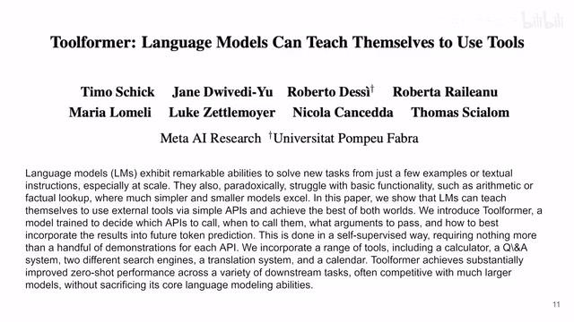
00:00:00–00:00:10 · 画面 001大家好啊,今天我们来快速梳理一篇论文,Toolformer,Language Models Can Teach Themselves to Use Tools 这篇论文呢,就是教我们怎么让这个 language model 自己学会去使用这个工具，特别是在工程上这是一个非常好的思路啊，因为你不能指望说一个模型它能够解决所有问题，毕竟是术业有专攻,对吧？所以更重要的是这个 language model 知道在什么时候去使用这个工具，让它的这个得到的结论是更好的
00:00:10–00:00:45 · 画面 002
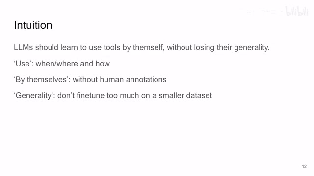
00:00:10–00:00:45 · 画面 002同时呢，我们希望在这个使用工具的过程啊，它是一个自己学习的过程啊，它不需要人来提供这个标注啊，然后呢，我们最后呢得到了这个使用工具的能力之后呢，而不失去它的泛化的性能，那么基于以上的这些目的呢，本文的作者呢提出了就是这个 Toolformer，那下面我们来看它是怎么实现的
00:00:45–00:00:46 · 画面 003
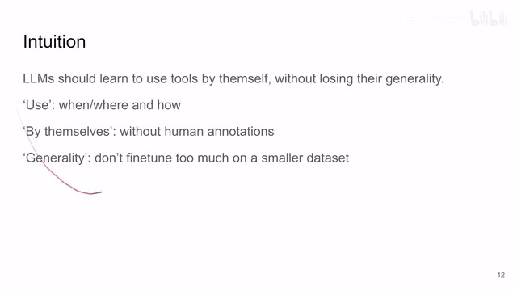
00:00:45–00:00:46 · 画面 00300:00:46–00:00:52 · 画面 004
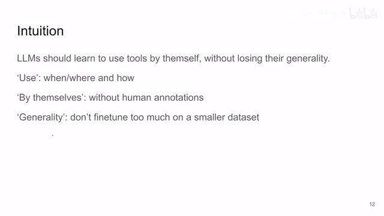
00:00:46–00:00:52 · 画面 00400:00:52–00:01:22 · 画面 005
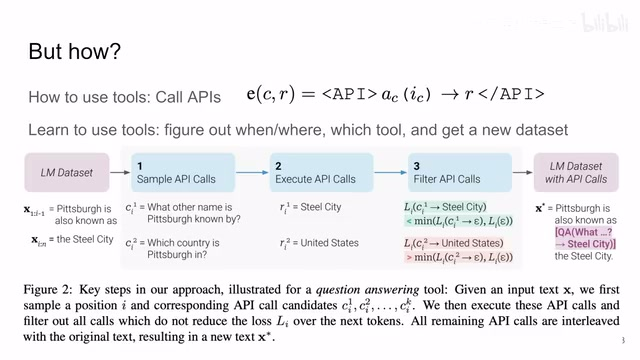
00:00:52–00:01:22 · 画面 005首先，作为一个 language model，它应该怎么样使用这个工具呢，这里呢，作者就说，我们定一个 API，每次呢，这个 language model 当它想使用工具的时候，就叫相应的 API，然后等到这个 API 呢把结果拿过来，这个 language model 呢再继续跑，所以呢，你看到这里啊，这里我们定一个函数，因为你想调 API 的这个过程呢，本质上也是生成一串序列，这个序列只不过恰好是这个计算器代码的形状具体来说，就是我们这里有三个特别的 token，一个叫做 API token，一个叫 API 结束的 token，还有一个就是表示我等待 API 结果的 token，就是这个箭头，那么整个调 API 的序列就是你把你想要调 API 的格式对吧，API 的格式放在前面，等 API 的结果，然后前后拿这两个 token 给它包起来
00:01:22–00:01:23 · 画面 006
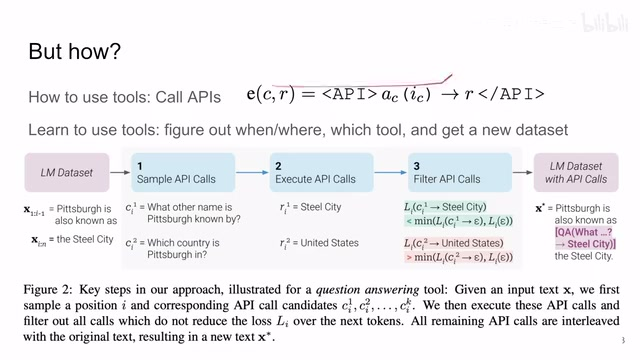
00:01:22–00:01:23 · 画面 00600:01:23–00:01:33 · 画面 007
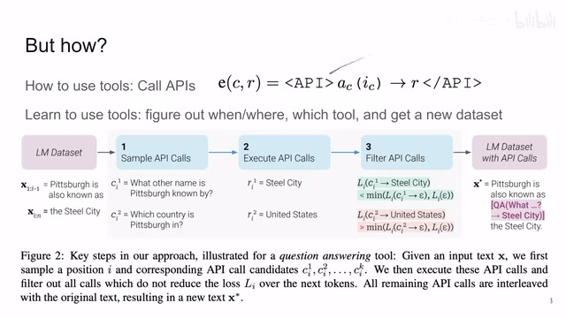
00:01:23–00:01:33 · 画面 00700:01:33–00:01:37 · 画面 008
00:01:33–00:01:37 · 画面 00800:01:37–00:02:52 · 画面 009
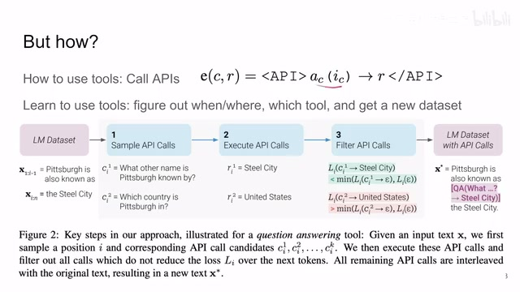
00:01:37–00:02:52 · 画面 009只要你的 language model 生成这样一个形式的序列，我们就知道我们该叫相应的 API 去拿到一个结果给它填回来了，那么这个就是在实际实现层面上怎么让 language model 去叫上 API但是呢，我们还是要让这个 language model 知道，我应该在什么时候，或者说确切说应该是在这个语句中的什么地方去叫这个 API，最终呢，解决了这些问题之后呢，作者呢会把这些所有的这些经验，我该在什么地方叫叫哪个 API 这些经验结合原有的这个数据集给它生成一个新的数据集，我们只要在这个新的数据集上 fine-tuning，因为原来的那些数据的信息都在原来那些样本都在，只不过我们修改了一部分数据集，让这个模型能够知道在特定的时候该使用工具了
这样子，我们就不会失去模型的泛化性能，这是一个非常顶层的设计，下面我们就来看我们应该怎么样让这个模型在没有人类标注的情况下，让它自己去知道我应该在什么地方用这个 API，用什么样的 API，那么大致的思路我们可以看到是这样的，我们看这里原来知道有一个 language model 的数据集，首先作者会让这个 language model 自己去想，我根据
00:02:52–00:02:54 · 画面 010
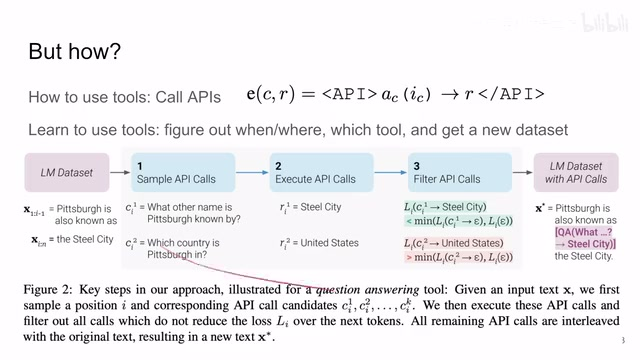
00:02:52–00:02:54 · 画面 01000:02:54–00:03:25 · 画面 011
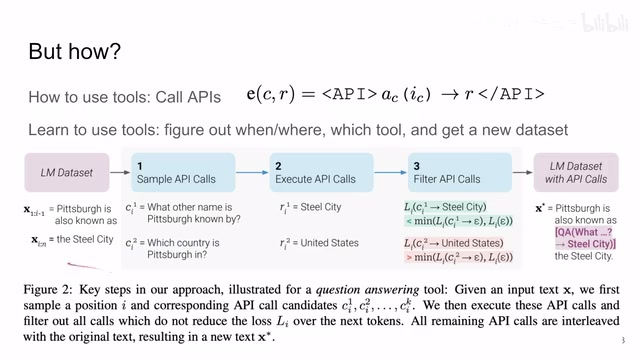
00:02:54–00:03:25 · 画面 011这些句子，我应该提在哪些地方提什么样的问题，然后经过一个初步的筛查之后，他真的去用 API 去解决这些问题拿到这个结果回来之后呢，我们再进行一个比较，看见这个 API 是不是真的对这个结果有帮助，那如果有帮助，我们就保留这个样本，就是把我们调 API 的这个过程加到这个原来的这个样本当中，这是一个非常顶层的这个 Pipeline 的设计，那下面呢，我们就对中间这一个个步骤来仔细来看，那首先第一步就是这个 Sample API Calls，就是我要知道我在什么时候该需要叫这个 API 了
00:03:25–00:03:28 · 画面 012
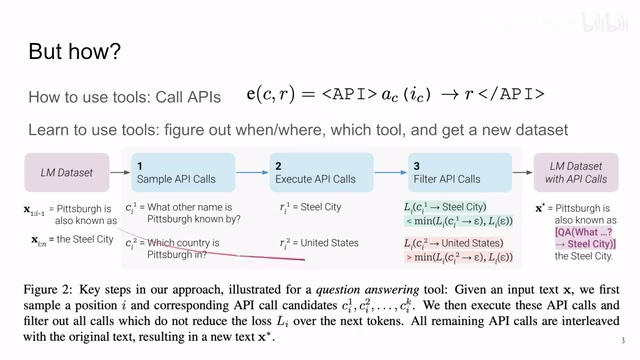
00:03:25–00:03:28 · 画面 01200:03:28–00:03:33 · 画面 013
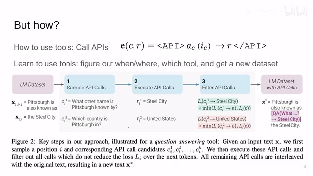
00:03:28–00:03:33 · 画面 01300:03:33–00:05:31 · 画面 014
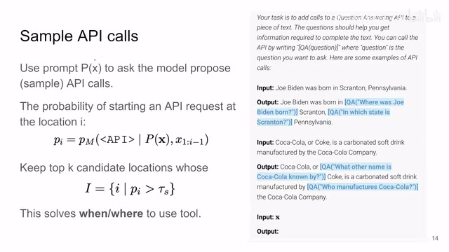
00:03:33–00:05:31 · 画面 014那这个时候呢，作者的思路就是我已经训好一个 language model 了嘛，我用一个 prompt 来去让这个模型自己去标注啊，自己去想我该在什么地方去叫一个 API 啊，你可以看到这个 prompt 呢，比如说这里啊，这个这个 question answering 这个 prompt那么一开始他说，你的任务呢就是去叫一个这个 QA 的 API 啊，然后呢，这个 API 的形式该怎么叫对吧，然后呢，提供的一些例子呢，你可以看到这个拜登生于宾州啊，那这里呢就是我具体哪一个城市哪一个 state 啊都问一下，那么另一个例子对吧，可口可乐啊或者他的这个另一个名字叫什么对吧，然后呢这些东西啊，他的形式呢是这样子的，把这个 prompt 呢交给我们的这个 language model
那么拿到这个 prompt 呢，language model 呢就开始预测我该在什么地方去加入这个 API，那确切来说呢，我们只关心这个 API request 它开始的这个 token 它出现了概率，就是说你看这是我们当前的这个 prompt，这是我们的一个序列在给了这个 prompt 的情况下，我们这个序列在进行到第 I 个位置的时候生成 API 开始的这个 token，它的概率我们定义这个概率叫做这个 IM，是我们这个 language model，那么这个概率就是一个数值，我们选择这个数值大于一定阈值的这些所有的 candidate
如果这 candidate 的数量大于 k 个，那我们就保留 top k，也就是概率最大的这么 k 个 candidate。那么有了这些 candidate 呢，就是针对这样一个文本，这样一个序列，我们就知道说可能在哪里在我们去需要使用这个工具。那么这个呢就是第一步，我们先去发现在哪里去用这个工具。
00:05:31–00:06:09 · 画面 015
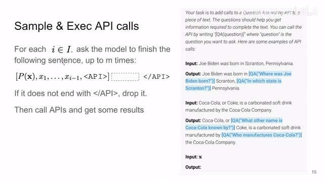
00:05:31–00:06:09 · 画面 015那现在对于这个样本来说，我们有了一个集合，一个 candidate，我希望在哪些位置调这个 API。那么你对于同一个位置，你多 sample 几次，让它多生成几种调 API 的方法，让它去试呗，对吧？然后呢，如果有一些句子它没有这个 API 结束的这个指令，没生成这个 token，你就把这个句子给它去掉，就这样一个简单的数据清理的过程。最后呢，我们拿到的样本呢就是像这样子。
这个模型知道在哪个位置它应该提什么样的问题，然后你就叫 API 就完事了对吧，把这个 API 叫起来，API 就给你相应的结果，我们并不是说直接把拿到这个结果就放到我们的数据集里面了对吧，因为我们千万要记着不要见着风就是雨，接到这些消息我们本身也要判断，你明白这个意思，像这种完全无中生有的东西
00:06:09–00:08:03 · 画面 016
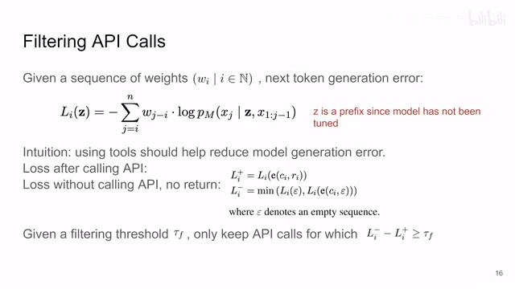
00:06:09–00:08:03 · 画面 016你再帮他说一遍，你等于这个东西，你你也有责任的，对吧？所以呢，我们要有一个自己的判断。那怎么样来判断呢？那这里呢，这个依据就是这个结果能不能帮助我们更好的预测未来的这个 token。那么他这个东西就是一个 loss 嘛，z 是一个序列啊。那么这个 loss 就是说我的这个模型拿到这个 z 这个序列之后。生成这个样本，这个样本生成的这个 cross entropy loss 是多少？那我们来看，比如说我们在 DI 号这个位置，我们想要计算这个 loss，它呢其实是计算了 DI 个 token 开始到 DN 个 token，这从 I 到 N 这个 token 里面数量的所有的 loss 的一个和。然后呢这个和呢是一个加权的和，这个权重呢就是这个 W
因为一个很直接的设计就是你不会想要这个当前的 token 对全句施加相同的影响那更常见的形式呢是这个当前的这个 token 对临近他的这个 token 施加的影响会比较大，那对他离的比较远的 token 那施加的影响呢就相对较小。所以呢，这个 w 这个序列呢是一个人工指定的这么一个权重的序列，你手动给他定义一个权重，随着 token 的距离增加从 1-0 这样子呢对吧，他就更加看重靠近自己的 token。那后面呢，这个呢就是对吧，cross entropy loss 了。
就是拿到我们句子的前半部分还有我们这个 Z 这个序列，我们想要生成这个 ground truth 下一个 token 就是这个 token 它的这个概率是多少呢对吧，所以这个呢是一个加权的这个 cross entropy loss
00:08:03–00:08:05 · 画面 017
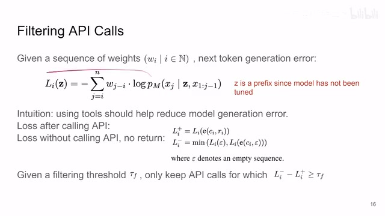
00:08:03–00:08:05 · 画面 01700:08:05–00:08:57 · 画面 018
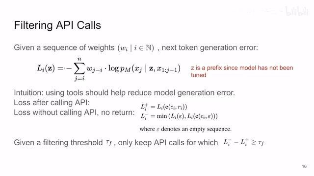
00:08:05–00:08:57 · 画面 018那注意看呢这个时候我们的这个 Z 是怎么样加入到这个序列里面的呢它呢并不是说我在这个 X 生成到这个 Z.1 的这个地方把这个 Z 插进来并不是这么干的因为这个时候你的模型还没有对这个 Z 做 fine-tuning 还没有做训练这个事情所以你加在这儿呢效果是不好的。那这个时候呢，作者使用的方法就是把 Z 作为整个句子的一个前缀加在这个句子的最前面，你模型在算这个 loss 的时候还是用它更熟练的原来的这个从 J-1 到 J 这个形式。所以这是一个值得注意的设计的地方。那么然后呢，我们就开始算 loss 对吧？我们说了，我们要加自己的判断，这个时候呢，我们算三个 loss，第一个就是。
我们用了这个 API 之后拿到这个 API 的结果这个 R，把整个这句话也就是我们之前看到的这个形式的这一句话我们加到这个句子的最前面，这是第一个 loss。那么第二个 loss 就是我取一个空序列，我就是前面什么都不加，这是最后的前面是空的，这个时候我算一个 loss。那第三个就是我去调了这个 API 但是结果我故意把它写成空的。
00:08:57–00:08:59 · 画面 019
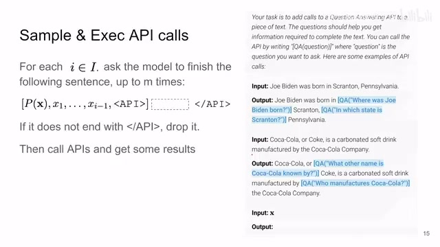
00:08:57–00:08:59 · 画面 01900:08:59–00:09:03 · 画面 020
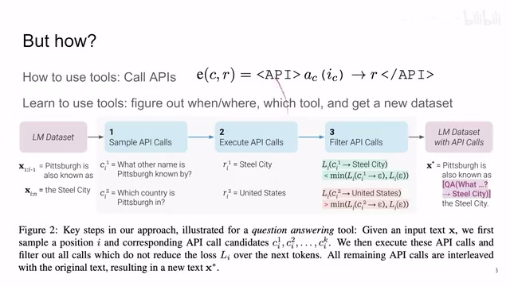
00:08:59–00:09:03 · 画面 02000:09:03–00:09:04 · 画面 021
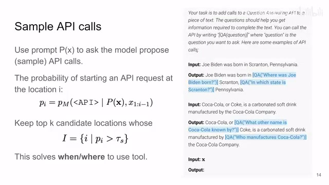
00:09:03–00:09:04 · 画面 02100:09:04–00:09:13 · 画面 022
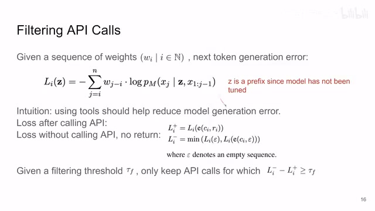
00:09:04–00:09:13 · 画面 02200:09:13–00:09:22 · 画面 023
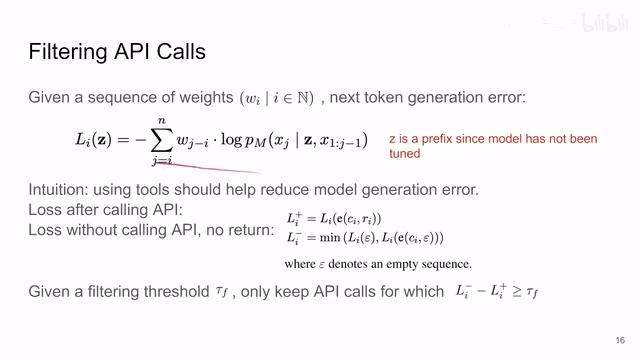
00:09:13–00:09:22 · 画面 023就故意没有结果把这个句子放到前面去我们来算一个 loss，那这个时候呢我们定一个阈值，如果说我使用我的这个 API 拿到这个结果之后整个这句话的这个生成呢使得我们这个 loss 下降的幅度大于了这个阈值
00:09:22–00:10:37 · 画面 024
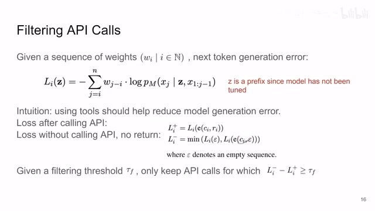
00:09:22–00:10:37 · 画面 024就是这个样子嘛，相比于什么都不说，或者是拿到一个空的结果，它的这个 loss 有下降，那这个时候我们就知道，我叫这个 API 拿到这个结果是有帮助的，我们就把这个 API 的调用给它保存下来不然我们就认为 API 没有调用，其实你看到这是一个很有设计心思的地方，它不是说单纯的和一个空序列去比较，和不叫 API 比较，同时它还有叫 API 但是没有结果来比较这就避免了说你 API 本身，你调 API 的过程中它形成一个对模型生成的一个 prompt，就是这个模型哪怕它不调 API 的这个结果，它通过你想要叫什么 API 它能够推断出一些信息，那么这个事情是我们想要避免的，所以作者还加了这样一个 loss 来比较，这是一个很有心思的设计，那么然后我们就最终就知道了说，我们应该在哪些地方去叫 API
现在呢，我们就真的去把这个 API 叫了，然后呢，把这个句子整个给它组合起来啊，就像这样组合起来生成一个新的数据集，在这个上面 fine-tuning 就好了，那么你实际在推荐的时候对吧，把前面的句子输进来，然后呢，这个到这个相应需要叫 API 的地方，那这个 Language Model 就生成嘛，一直把这个 API 输入的部分生成完就是到这个箭头这个位置，然后呢，拿到我们这个 API 的指令我们就去叫吧
00:10:37–00:10:49 · 画面 025
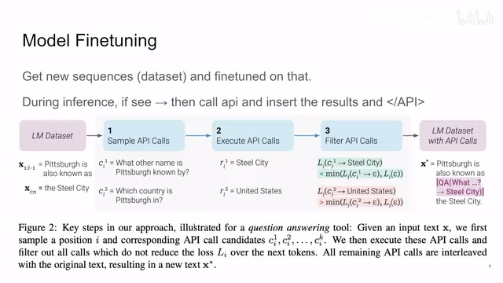
00:10:37–00:10:49 · 画面 02500:10:49–00:10:50 · 画面 026
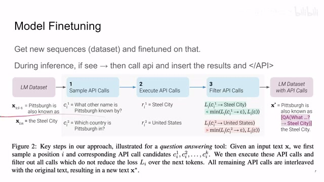
00:10:49–00:10:50 · 画面 02600:10:50–00:11:20 · 画面 027
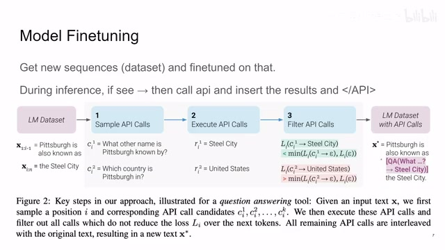
00:10:50–00:11:20 · 画面 027将 API 得到这个结果，然后再接回到现在这个序列里面，把结果输进来，最后告诉它 API 调用结束了，我们继续再生成句子的后面部分，那么这样就是你训练完这个模型之后推断它的一个过程，是一个很直接的设计那然后我们就看这个作者在实际训练的时候用了哪些工具啊对吧，啊看到这个刀枪剑戟斧钺钩叉镗镰槊棒啊，不对这个拿错了啊，这里有这个 question answering 啊，是基于另一个语言模型的啊，计算器啊，python 写的还有呢这个去查 wiki 去还有做机器翻译还有日历等等这些东西，同时呢你在实际做的时候呢并不是说所有的工具都是一样的，那这里呢作者说啊，一般来说呢
00:11:20–00:12:05 · 画面 028
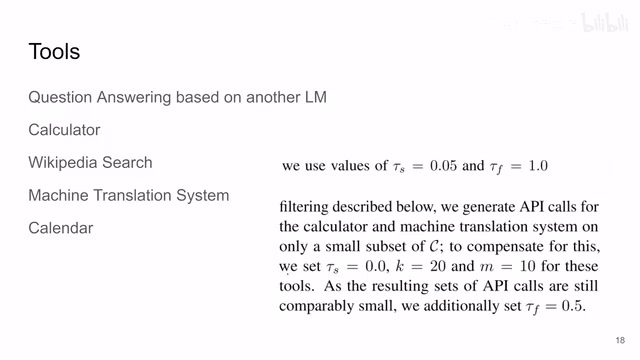
00:11:20–00:12:05 · 画面 028两个阈值呢给成这样的值，但是呢对于这个像计算器啊，这个机器翻译这种问题呢，它们呢只占样本中非常少的部分，所以呢啊对它这个权重呢做相应的调整，那具体的训练细节呢大家可以到原文查看，那么然后呢就是一些结果了对吧？那这个是原装的这个 GPT-J、GPT-J 在它原来这个数据集上 fine-tuning
00:12:05–00:13:08 · 画面 029
00:12:05–00:13:08 · 画面 029然后本文方法就是加了 API 的这个 fine-tuning，然后还有这个就是虽然我是训练了去叫 API，但是我不叫 API，就是你实际人为强行的把这个 API token 这开始的这个 token 的概率给它设成 0，然后就是右边这些结果这些结果其实并不那么重要的因为你实际使用工具去做这个事情啊，就是大家都在做心算题的时候，那对面来的一个拿计算器的那这就已经结束了啊，后面还有几场能赢啊，很难得啊，那总的来说呢还是感兴趣的朋友呢非常推荐你到原文查看查看，你需要的这个结果需要的文化
那么这个视频呢也是一个开端，我们后面呢会介绍一系列的使用 language model 帮助我们 robotics 帮助我们的 agent 去更好完成任务这一系列的这一个大的主题，好的，那么感谢您的收看，再见
00:13:08–00:13:08 · 画面 030
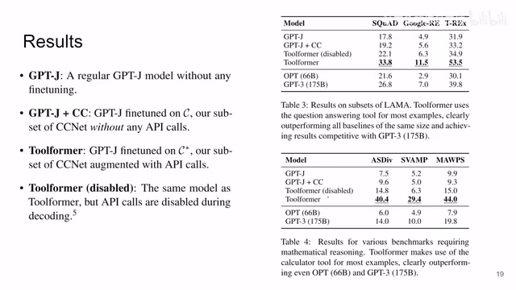
00:13:08–00:13:08 · 画面 030转写与来源说明 · 0 个自动复核提示
保留 36 个原始语音片段，0 个片段触发自动复核提示。提示仅用于定位可能的术语、重复或识别问题，不等于已确认错误。
讲解画面为源视频截图（640×360），不是可编辑 PPT 文件。全片按每秒 2 帧扫描内容变化，逐步展开页保留；连续动画保留代表画面。清晰度受源视频限制。
原视频：paper/合集_2026-10-16_多模态语言模型/[论文简析]Toolformer Language Models Can Teach Themselves to Use Tools[2302.04761].mp4
SHA-256：098a1676d682f1efd8885e837bb0424a1865ba4c1e070d6e42ceaad2695a2af3
全文按视频语音与画面制作。原论文可从上方链接下载；完整资料包保留全文、原始逐字稿、字幕和校对记录。